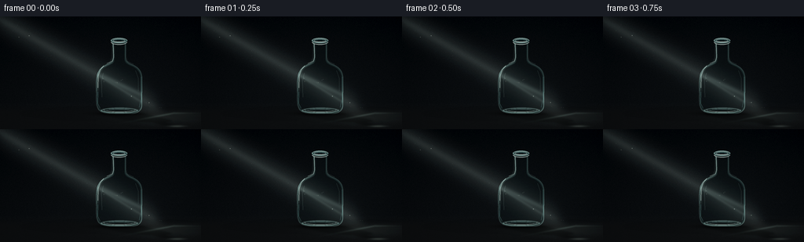
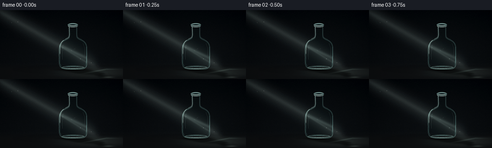
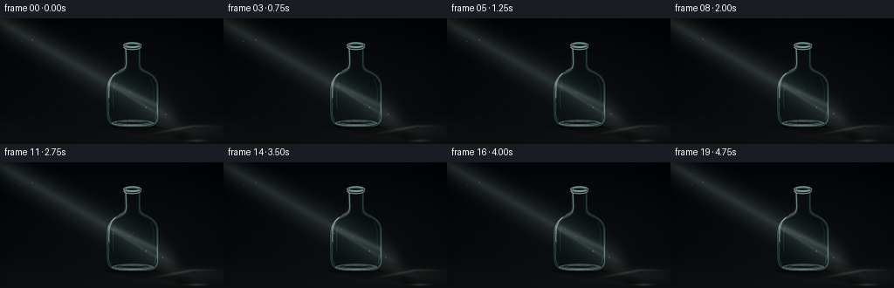
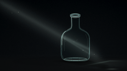
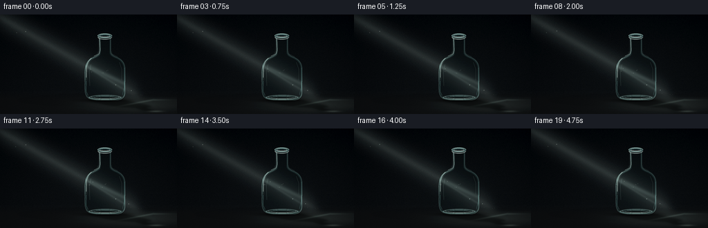

CODING AGENTS AS PIXEL WORLD MODELS
traex/GPT-5.6-Sol · phygen_043
点击播放 · 原生 RGB 像素
逐轮保存的候选
回放视频、检查图与代码变化。
每份候选均可单独播放。实际图片检查记录在下方工具轨迹中。
候选 01播放与检查图
点击播放 · 原生 RGB 像素


展开代码变化
--- 上一保存版本
+++ 本次保存版本
@@ -0,0 +1,252 @@
+from pathlib import Path
+import math
+import numpy as np
+import cv2
+from PIL import Image, ImageDraw, ImageFilter
+import artifact_io
+
+# Procedural, deterministic rendering of a glass bottle in a diagonal light shaft.
+W, H, N = 256, 144, 20
+S = 4
+WW, HH = W*S, H*S
+rng = np.random.default_rng(43043)
+
+
+def bezier(p0, p1, p2, p3, n=16):
+ t = np.linspace(0.0, 1.0, n, endpoint=False)[:, None]
+ p0, p1, p2, p3 = map(lambda p: np.asarray(p, float), (p0,p1,p2,p3))
+ return (1-t)**3*p0 + 3*(1-t)**2*t*p1 + 3*(1-t)*t**2*p2 + t**3*p3
+
+
+def bottle_contour():
+ pts = []
+ def C(a,b,c,d,n=16): pts.extend(bezier(a,b,c,d,n).tolist())
+ pts.append((143.0, 32.0))
+ C((143,32),(143,42),(145,50),(143.5,56),13)
+ C((143.5,56),(142,60),(132,61),(127,67),13)
+ C((127,67),(121.5,74),(122,88),(122.4,99),14)
+ C((122.4,99),(122.3,106),(121.8,115),(125.6,119.5),13)
+ C((125.6,119.5),(129,123.5),(136,124),(143,124),10)
+ pts.append((168.0,124.0))
+ C((168,124),(176,124),(180.8,120),(181,113),12)
+ pts.append((181.0,80.0))
+ C((181,80),(181,70),(177,65),(169,61.5),13)
+ C((169,61.5),(162,58.5),(160,57),(160,52),11)
+ pts.append((160.0,32.0))
+ return np.asarray(pts, dtype=np.float32)
+
+CONTOUR = bottle_contour()
+
+
+def poly_mask(points, blur=0.0):
+ im = Image.new('L', (WW, HH), 0)
+ p = [(int(round(x*S)), int(round(y*S))) for x,y in points]
+ ImageDraw.Draw(im).polygon(p, fill=255)
+ if blur:
+ im = im.filter(ImageFilter.GaussianBlur(blur*S))
+ return np.asarray(im, np.float32) / 255.0
+
+BOTTLE_MASK = poly_mask(CONTOUR)
+BOTTLE_U8 = (BOTTLE_MASK*255).astype(np.uint8)
+DIST_IN = cv2.distanceTransform(BOTTLE_U8, cv2.DIST_L2, 5) / S
+ERODE1 = cv2.erode(BOTTLE_U8, np.ones((7,7),np.uint8), iterations=1).astype(np.float32)/255
+ERODE2 = cv2.erode(BOTTLE_U8, np.ones((15,15),np.uint8), iterations=1).astype(np.float32)/255
+EDGE_OUT = np.clip(BOTTLE_MASK - ERODE1, 0, 1)
+EDGE_INNER = np.clip(ERODE1 - ERODE2, 0, 1)
+
+# Project the upright outline onto the floor in the direction of the light.
+floor_y = 123.5
+SHADOW_CONTOUR = CONTOUR.copy()
+height = floor_y - SHADOW_CONTOUR[:,1]
+SHADOW_CONTOUR[:,0] += 0.74 * np.maximum(height, 0)
+SHADOW_CONTOUR[:,1] = floor_y + 0.175 * np.maximum(height, 0)
+SHADOW_SOFT = poly_mask(SHADOW_CONTOUR, 3.0)
+SHADOW_SHARP = poly_mask(SHADOW_CONTOUR, 0.8)
+
+# Static fine-grain texture and slowly drifting dust seeds.
+noise_small = rng.normal(0, 1, (H, W)).astype(np.float32)
+noise_hi = cv2.resize(noise_small, (WW,HH), interpolation=cv2.INTER_CUBIC)
+dust = []
+for _ in range(31):
+ x = rng.uniform(-12, 205)
+ yline = 0.565*x + 4
+ y = yline + rng.normal(0, 9)
+ r = rng.choice([0.25,0.35,0.5,0.7], p=[.28,.34,.28,.10])
+ phase = rng.uniform(0, 2*math.pi)
+ speed = rng.uniform(0.15,0.55)
+ dust.append((x,y,r,phase,speed))
+
+
+def composite(arr, color, alpha):
+ a = np.clip(alpha, 0, 1)[...,None]
+ return arr*(1-a) + np.asarray(color, np.float32)*a
+
+
+def rgba_overlay(arr, painter, blur=0):
+ base = Image.fromarray(np.uint8(np.clip(arr,0,255)), 'RGB').convert('RGBA')
+ layer = Image.new('RGBA', (WW,HH), (0,0,0,0))
+ painter(ImageDraw.Draw(layer))
+ if blur:
+ layer = layer.filter(ImageFilter.GaussianBlur(blur*S))
+ return np.asarray(Image.alpha_composite(base,layer).convert('RGB'), np.float32)
+
+
+def path(draw, points, fill, width, joint='curve'):
+ draw.line([(int(x*S),int(y*S)) for x,y in points], fill=fill,
+ width=max(1,int(width*S)), joint=joint)
+
+
+def render(k):
+ t = k/(N-1)
+ yy, xx = np.mgrid[0:HH,0:WW].astype(np.float32)
+ xn, yn = xx/S, yy/S
+
+ # Near-black blue/charcoal studio, with subtle depth and film grain.
+ vertical = yn/H
+ arr = np.zeros((HH,WW,3), np.float32)
+ arr[...,0] = 3.3 + 7.2*vertical
+ arr[...,1] = 5.5 + 7.8*vertical
+ arr[...,2] = 8.0 + 7.5*vertical
+ halo = np.exp(-(((xn-150)/95)**2 + ((yn-84)/75)**2))
+ arr += halo[...,None]*np.array([2.5,3.3,3.3])
+ vign = np.clip(((xn-W/2)/(W*.72))**2 + ((yn-H/2)/(H*.8))**2,0,1)
+ arr -= 4.0*vign[...,None]
+ arr += noise_hi[...,None]*0.70
+
+ # Matte floor and a very soft horizon, lit where the shaft meets it.
+ floor = np.clip((yn-111.0)/12.0,0,1)
+ arr = composite(arr, (15,15,15), floor*0.45)
+ arr += (np.exp(-((yn-112.5)/2.0)**2)*0.9)[...,None]
+
+ sweep = 1.15*math.sin(2*math.pi*(t*.72+0.06))
+ shimmer = 0.96 + .035*math.sin(2*math.pi*(t*2.1+0.18)) + .018*math.sin(2*math.pi*t*5.3)
+ center = 0.565*xn + 3.5 + sweep
+ d = np.abs(yn-center)/math.sqrt(1+0.565**2)
+ shaft_gate = 1/(1+np.exp((xn-199)/5.0))
+ shaft = (0.128*np.exp(-(d/15.5)**2) + 0.062*np.exp(-(d/4.7)**2))*shaft_gate*shimmer
+ shaft *= 1/(1+np.exp(-(xn+10)/8))
+ arr = composite(arr, (181,203,194), shaft)
+
+ # Wide luminous footprint after the shaft reaches the horizontal surface.
+ pool = np.exp(-((xn-204)/53)**2 - ((yn-128.5)/9.0)**2)
+ pool *= np.clip((yn-113)/13,0,1) * (0.12*shimmer)
+ arr = composite(arr, (118,137,128), pool)
+
+ # Floating particles establish that the diagonal illumination is volumetric.
+ def paint_dust(draw):
+ for x0,y0,r,ph,sp in dust:
+ x = x0 + 2.2*math.sin(ph + t*sp*2*math.pi)
+ y = y0 - 3.0*t*sp + 0.7*math.sin(ph*1.7+t*2.4)
+ dl = abs(y-(0.565*x+3.5+sweep))
+ if dl < 20 and -2 < x < 220 and -2 < y < 142:
+ a = int(25 + 90*math.exp(-(dl/9)**2))
+ rr = max(1,int(r*S))
+ draw.ellipse((int(x*S-rr),int(y*S-rr),int(x*S+rr),int(y*S+rr)),
+ fill=(210,225,211,a))
+ arr = rgba_overlay(arr, paint_dust, 0.18)
+
+ # Cast shadow: recognizably bottle-shaped, softened by thick transparent glass.
+ arr = composite(arr, (1.0,2.2,2.5), SHADOW_SOFT*(0.31+0.02*math.sin(t*2*math.pi)))
+ arr = composite(arr, (2.0,3.0,3.1), SHADOW_SHARP*0.24)
+ # Contact shadow anchors the bottle on the floor.
+ contact = np.exp(-((xn-152)/31)**2 - ((yn-124)/2.5)**2)*0.72
+ arr = composite(arr, (0,0,0), contact)
+
+ # Glass caustics tracing the far rim of the cast shadow.
+ caustic = np.exp(-((yn-(123.4 + 0.188*np.maximum(221-xn,0)))/1.25)**2)
+ caustic *= np.exp(-((xn-211)/29)**2)*0.18*shimmer
+ arr = composite(arr, (145,177,165), caustic)
+ caustic2 = np.exp(-((xn-225)/10)**2 - ((yn-140)/1.3)**2)*0.19*shimmer
+ arr = composite(arr, (170,195,180), caustic2)
+
+ # Refract the already-rendered world through the bottle's curved wall.
+ base = arr.copy()
+ nx = (xn-151.5)/31.0
+ displacement = 4.8*np.tanh(nx*2.0) * np.clip((DIST_IN/8),0,1)
+ displacement += 1.15*np.sin((yn-36)*0.105) * np.clip((DIST_IN/10),0,1)
+ mapx = (xx + displacement*S).astype(np.float32)
+ mapy = (yy + (0.7*np.sin(nx*math.pi)*S)).astype(np.float32)
+ refr = cv2.remap(base, mapx, mapy, cv2.INTER_LINEAR, borderMode=cv2.BORDER_REFLECT)
+ # Transparent blue-green glass and slight internal luminosity.
+ inside_mix = BOTTLE_MASK*0.78
+ arr = arr*(1-inside_mix[...,None]) + refr*inside_mix[...,None]
+ arr = composite(arr, (18,39,39), BOTTLE_MASK*0.12)
+
+ # A displaced, split shaft inside the bottle suggests refraction and focusing.
+ d1 = np.abs(yn-(0.47*xn+15.0+sweep*0.4))/math.sqrt(1+.47**2)
+ d2 = np.abs(yn-(0.61*xn-1.0+sweep*0.25))/math.sqrt(1+.61**2)
+ inner_ray = BOTTLE_MASK*(0.14*np.exp(-(d1/3.2)**2)+0.075*np.exp(-(d2/1.6)**2))*shimmer
+ arr = composite(arr, (186,218,209), inner_ray)
+
+ # Wall thickness: dim inner edge, luminous outer edge modulated by incident light.
+ edge_light = np.clip(0.22 + 2.4*shaft, .22, .75)
+ arr = composite(arr, (83,133,129), EDGE_INNER*0.16)
+ arr = composite(arr, (157,201,194), EDGE_OUT*edge_light)
+
+ # Soft glow along illuminated glass before adding crisp highlights.
+ def glass_glow(draw):
+ path(draw, [(144,34),(144,53),(141,59),(130,65),(125,75),(124,96)],
+ (180,226,216,105), 2.3)
+ path(draw, [(160,34),(160,53),(163,59),(174,64),(180,73),(180,102)],
+ (112,173,170,52), 1.5)
+ path(draw, [(127,119),(136,122),(165,122),(176,119)], (170,218,208,80), 2.0)
+ arr = rgba_overlay(arr, glass_glow, 1.4)
+
+ # Crisp specular traces; broken highlights look more photographic than outlines.
+ def glass_lines(draw):
+ path(draw, [(144.2,35),(144.5,52),(143,57),(136,60)], (211,237,228,175), .62)
+ path(draw, [(132,63),(127.5,68),(124.8,76),(124.5,91)], (220,240,231,205), .72)
+ path(draw, [(124.6,96),(124.3,111),(127.4,117)], (132,191,185,120), .55)
+ path(draw, [(128,120),(138,122.4),(166,122.5),(175,119.5)], (190,226,218,155), .72)
+ path(draw, [(179.5,77),(179.5,105),(177,116)], (116,177,174,95), .55)
+ path(draw, [(160,36),(160,52),(162,57),(170,61)], (169,213,207,90), .48)
+ # inner reflected streaks
+ path(draw, [(131.5,72),(129.3,82),(129.8,103)], (188,226,216,82), .48)
+ path(draw, [(172.5,69),(176,79),(176,95)], (191,226,216,64), .42)
+ path(draw, [(139,118.4),(164,118.5)], (224,242,234,110), .46)
+ arr = rgba_overlay(arr, glass_lines, 0)
+
+ # Heavy base glass and subtle inner bottom reflection.
+ def base_detail(draw):
+ draw.ellipse((128*S,116*S,176*S,124*S), outline=(158,204,197,84), width=2*S)
+ draw.arc((131*S,115*S,173*S,122*S), 8, 172, fill=(222,239,232,115), width=1*S)
+ draw.arc((133*S,118*S,171*S,124*S), 180, 354, fill=(83,142,139,85), width=1*S)
+ arr = rgba_overlay(arr, base_detail, 0.35)
+
+ # Bottle mouth, lip thickness, and dark opening.
+ def mouth(draw):
+ draw.ellipse((141*S,27.3*S,162*S,34.2*S), fill=(9,16,18,195))
+ draw.ellipse((141*S,27.3*S,162*S,34.2*S), outline=(169,215,208,190), width=1*S)
+ draw.ellipse((143*S,28.5*S,160*S,32.8*S), outline=(225,240,233,145), width=1*S)
+ draw.arc((141*S,29*S,162*S,36*S), 3, 177, fill=(227,244,236,180), width=1*S)
+ draw.arc((142*S,29*S,161*S,35*S), 182, 356, fill=(69,125,124,155), width=1*S)
+ # lip side catches
+ path(draw, [(142,30.5),(143,35.2),(145,36.2)], (192,226,219,145), .55)
+ path(draw, [(161,30.5),(160,35)], (123,179,176,95), .5)
+ arr = rgba_overlay(arr, mouth, .16)
+
+ # Tiny specular glints move only with the light shimmer.
+ glint_a = int(130 + 90*(0.5+0.5*math.sin(t*2*math.pi+.7)))
+ def glints(draw):
+ xg, yg = 128.4, 68.3
+ path(draw, [(xg-2.0,yg),(xg+2.0,yg)], (235,250,241,glint_a), .45)
+ path(draw, [(xg,yg-2.2),(xg,yg+2.2)], (235,250,241,glint_a), .45)
+ draw.ellipse((166.5*S,101*S,168.0*S,102.5*S), fill=(220,244,235,125))
+ arr = rgba_overlay(arr, glints, .35)
+
+ # Final optical bloom, mild color grade, and downsampled antialiasing.
+ img = Image.fromarray(np.uint8(np.clip(arr,0,255)), 'RGB')
+ small = img.resize((W,H), Image.Resampling.LANCZOS)
+ out = np.asarray(small, np.float32)
+ # restrained contrast lift keeps blacks rich without crushing the shadow
+ out = np.clip((out-5.0)*1.075+5.0, 0, 255)
+ return out.astype(np.uint8)
+
+
+def main():
+ frames = np.stack([render(i) for i in range(N)], axis=0)
+ assert frames.shape == (20,144,256,3) and frames.dtype == np.uint8
+ artifact_io.save(frames, Path(__file__).resolve().parent)
+
+if __name__ == '__main__':
+ main()
候选 02播放与检查图
点击播放 · 原生 RGB 像素


展开代码变化
--- 上一保存版本
+++ 本次保存版本
@@ -128,9 +128,9 @@
arr = composite(arr, (181,203,194), shaft)
# Wide luminous footprint after the shaft reaches the horizontal surface.
- pool = np.exp(-((xn-204)/53)**2 - ((yn-128.5)/9.0)**2)
- pool *= np.clip((yn-113)/13,0,1) * (0.12*shimmer)
- arr = composite(arr, (118,137,128), pool)
+ pool = np.exp(-((xn-194)/67)**2 - ((yn-130.0)/10.5)**2)
+ pool *= np.clip((yn-111)/14,0,1) * (0.235*shimmer)
+ arr = composite(arr, (103,120,113), pool)
# Floating particles establish that the diagonal illumination is volumetric.
def paint_dust(draw):
@@ -146,8 +146,8 @@
arr = rgba_overlay(arr, paint_dust, 0.18)
# Cast shadow: recognizably bottle-shaped, softened by thick transparent glass.
- arr = composite(arr, (1.0,2.2,2.5), SHADOW_SOFT*(0.31+0.02*math.sin(t*2*math.pi)))
- arr = composite(arr, (2.0,3.0,3.1), SHADOW_SHARP*0.24)
+ arr = composite(arr, (0.5,1.2,1.5), SHADOW_SOFT*(0.48+0.02*math.sin(t*2*math.pi)))
+ arr = composite(arr, (1.0,1.8,2.0), SHADOW_SHARP*0.27)
# Contact shadow anchors the bottle on the floor.
contact = np.exp(-((xn-152)/31)**2 - ((yn-124)/2.5)**2)*0.72
arr = composite(arr, (0,0,0), contact)
可观测工具轨迹
实际执行的命令与返回图片。
命令 1exit 0
/bin/bash -lc "cat prompt.txt && printf '\\n--- GENERATION_RULES.md ---\\n' && cat GENERATION_RULES.md"
命令 2exit 0
/bin/bash -lc "cat task_spec.json && printf '\\n--- FILES ---\\n' && find . -maxdepth 2 -type f -printf '%p %s bytes\\n' | sort"
命令 3exit 0
/bin/bash -lc "command -v ffmpeg; command -v python3; python3 - <<'PY' mods=['PIL','numpy','cv2','imageio','moviepy','cairo','moderngl'] for m in mods: try: x=__import__(m); print(m,'OK',getattr(x,'__version__','')) except Exception as e: print(m,'NO',e) PY"
命令 4exit 0
/bin/bash -lc 'cat artifact_io.py'
命令 5exit 0
/bin/bash -lc "cat > generate.py <<'PY'
from pathlib import Path
import math
import numpy as np
import cv2
from PIL import Image, ImageDraw, ImageFilter
import artifact_io
# Procedural, deterministic rendering of a glass bottle in a diagonal light shaft.
W, H, N = 256, 144, 20
S = 4
WW, HH = W*S, H*S
rng = np.random.default_rng(43043)
def bezier(p0, p1, p2, p3, n=16):
t = np.linspace(0.0, 1.0, n, endpoint=False)[:, None]
p0, p1, p2, p3 = map(lambda p: np.asarray(p, float), (p0,p1,p2,p3))
return (1-t)**3*p0 + 3*(1-t)**2*t*p1 + 3*(1-t)*t**2*p2 + t**3*p3
def bottle_contour():
pts = []
def C(a,b,c,d,n=16): pts.extend(bezier(a,b,c,d,n).tolist())
pts.append((143.0, 32.0))
C((143,32),(143,42),(145,50),(143.5,56),13)
C((143.5,56),(142,60),(132,61),(127,67),13)
C((127,67),(121.5,74),(122,88),(122.4,99),14)
C((122.4,99),(122.3,106),(121.8,115),(125.6,119.5),13)
C((125.6,119.5),(129,123.5),(136,124),(143,124),10)
pts.append((168.0,124.0))
C((168,124),(176,124),(180.8,120),(181,113),12)
pts.append((181.0,80.0))
C((181,80),(181,70),(177,65),(169,61.5),13)
C((169,61.5),(162,58.5),(160,57),(160,52),11)
pts.append((160.0,32.0))
return np.asarray(pts, dtype=np.float32)
CONTOUR = bottle_contour()
def poly_mask(points, blur=0.0):
im = Image.new('L', (WW, HH), 0)
p = [(int(round(x*S)), int(round(y*S))) for x,y in points]
ImageDraw.Draw(im).polygon(p, fill=255)
if blur:
im = im.filter(ImageFilter.GaussianBlur(blur*S))
return np.asarray(im, np.float32) / 255.0
BOTTLE_MASK = poly_mask(CONTOUR)
BOTTLE_U8 = (BOTTLE_MASK*255).astype(np.uint8)
DIST_IN = cv2.distanceTransform(BOTTLE_U8, cv2.DIST_L2, 5) / S
ERODE1 = cv2.erode(BOTTLE_U8, np.ones((7,7),np.uint8), iterations=1).astype(np.float32)/255
ERODE2 = cv2.erode(BOTTLE_U8, np.ones((15,15),np.uint8), iterations=1).astype(np.float32)/255
EDGE_OUT = np.clip(BOTTLE_MASK - ERODE1, 0, 1)
EDGE_INNER = np.clip(ERODE1 - ERODE2, 0, 1)
# Project the upright outline onto the floor in the direction of the light.
floor_y = 123.5
SHADOW_CONTOUR = CONTOUR.copy()
height = floor_y - SHADOW_CONTOUR[:,1]
SHADOW_CONTOUR[:,0] += 0.74 * np.maximum(height, 0)
SHADOW_CONTOUR[:,1] = floor_y + 0.175 * np.maximum(height, 0)
SHADOW_SOFT = poly_mask(SHADOW_CONTOUR, 3.0)
SHADOW_SHARP = poly_mask(SHADOW_CONTOUR, 0.8)
# Static fine-grain texture and slowly drifting dust seeds.
noise_small = rng.normal(0, 1, (H, W)).astype(np.float32)
noise_hi = cv2.resize(noise_small, (WW,HH), interpolation=cv2.INTER_CUBIC)
dust = []
for _ in range(31):
x = rng.uniform(-12, 205)
yline = 0.565*x + 4
y = yline + rng.normal(0, 9)
r = rng.choice([0.25,0.35,0.5,0.7], p=[.28,.34,.28,.10])
phase = rng.uniform(0, 2*math.pi)
speed = rng.uniform(0.15,0.55)
dust.append((x,y,r,phase,speed))
def composite(arr, color, alpha):
a = np.clip(alpha, 0, 1)[...,None]
return arr*(1-a) + np.asarray(color, np.float32)*a
def rgba_overlay(arr, painter, blur=0):
base = Image.fromarray(np.uint8(np.clip(arr,0,255)), 'RGB').convert('RGBA')
layer = Image.new('RGBA', (WW,HH), (0,0,0,0))
painter(ImageDraw.Draw(layer))
if blur:
layer = layer.filter(ImageFilter.GaussianBlur(blur*S))
return np.asarray(Image.alpha_composite(base,layer).convert('RGB'), np.float32)
def path(draw, points, fill, width, joint='curve'):
draw.line([(int(x*S),int(y*S)) for x,y in points], fill=fill,
width=max(1,int(width*S)), joint=joint)
def render(k):
t = k/(N-1)
yy, xx = np.mgrid[0:HH,0:WW].astype(np.float32)
xn, yn = xx/S, yy/S
# Near-black blue/charcoal studio, with subtle depth and film grain.
vertical = yn/H
arr = np.zeros((HH,WW,3), np.float32)
arr[...,0] = 3.3 + 7.2*vertical
arr[...,1] = 5.5 + 7.8*vertical
arr[...,2] = 8.0 + 7.5*vertical
halo = np.exp(-(((xn-150)/95)**2 + ((yn-84)/75)**2))
arr += halo[...,None]*np.array([2.5,3.3,3.3])
vign = np.clip(((xn-W/2)/(W*.72))**2 + ((yn-H/2)/(H*.8))**2,0,1)
arr -= 4.0*vign[...,None]
arr += noise_hi[...,None]*0.70
# Matte floor and a very soft horizon, lit where the shaft meets it.
floor = np.clip((yn-111.0)/12.0,0,1)
arr = composite(arr, (15,15,15), floor*0.45)
arr += (np.exp(-((yn-112.5)/2.0)**2)*0.9)[...,None]
sweep = 1.15*math.sin(2*math.pi*(t*.72+0.06))
shimmer = 0.96 + .035*math.sin(2*math.pi*(t*2.1+0.18)) + .018*math.sin(2*math.pi*t*5.3)
center = 0.565*xn + 3.5 + sweep
d = np.abs(yn-center)/math.sqrt(1+0.565**2)
shaft_gate = 1/(1+np.exp((xn-199)/5.0))
shaft = (0.128*np.exp(-(d/15.5)**2) + 0.062*np.exp(-(d/4.7)**2))*shaft_gate*shimmer
shaft *= 1/(1+np.exp(-(xn+10)/8))
arr = composite(arr, (181,203,194), shaft)
# Wide luminous footprint after the shaft reaches the horizontal surface.
pool = np.exp(-((xn-204)/53)**2 - ((yn-128.5)/9.0)**2)
pool *= np.clip((yn-113)/13,0,1) * (0.12*shimmer)
arr = composite(arr, (118,137,128), pool)
# Floating particles establish that the diagonal illumination is volumetric.
def paint_dust(draw):
for x0,y0,r,ph,sp in dust:
x = x0 + 2.2*math.sin(ph + t*sp*2*math.pi)
y = y0 - 3.0*t*sp + 0.7*math.sin(ph*1.7+t*2.4)
dl = abs(y-(0.565*x+3.5+sweep))
if dl < 20 and -2 < x < 220 and -2 < y < 142:
a = int(25 + 90*math.exp(-(dl/9)**2))
rr = max(1,int(r*S))
draw.ellipse((int(x*S-rr),int(y*S-rr),int(x*S+rr),int(y*S+rr)),
fill=(210,225,211,a))
arr = rgba_overlay(arr, paint_dust, 0.18)
# Cast shadow: recognizably bottle-shaped, softened by thick transparent glass.
arr = composite(arr, (1.0,2.2,2.5), SHADOW_SOFT*(0.31+0.02*math.sin(t*2*math.pi)))
arr = composite(arr, (2.0,3.0,3.1), SHADOW_SHARP*0.24)
# Contact shadow anchors the bottle on the floor.
contact = np.exp(-((xn-152)/31)**2 - ((yn-124)/2.5)**2)*0.72
arr = composite(arr, (0,0,0), contact)
# Glass caustics tracing the far rim of the cast shadow.
caustic = np.exp(-((yn-(123.4 + 0.188*np.maximum(221-xn,0)))/1.25)**2)
caustic *= np.exp(-((xn-211)/29)**2)*0.18*shimmer
arr = composite(arr, (145,177,165), caustic)
caustic2 = np.exp(-((xn-225)/10)**2 - ((yn-140)/1.3)**2)*0.19*shimmer
arr = composite(arr, (170,195,180), caustic2)
# Refract the already-rendered world through the bottle's curved wall.
base = arr.copy()
nx = (xn-151.5)/31.0
displacement = 4.8*np.tanh(nx*2.0) * np.clip((DIST_IN/8),0,1)
displacement += 1.15*np.sin((yn-36)*0.105) * np.clip((DIST_IN/10),0,1)
mapx = (xx + displacement*S).astype(np.float32)
mapy = (yy + (0.7*np.sin(nx*math.pi)*S)).astype(np.float32)
refr = cv2.remap(base, mapx, mapy, cv2.INTER_LINEAR, borderMode=cv2.BORDER_REFLECT)
# Transparent blue-green glass and slight internal luminosity.
inside_mix = BOTTLE_MASK*0.78
arr = arr*(1-inside_mix[...,None]) + refr*inside_mix[...,None]
arr = composite(arr, (18,39,39), BOTTLE_MASK*0.12)
# A displaced, split shaft inside the bottle suggests refraction and focusing.
d1 = np.abs(yn-(0.47*xn+15.0+sweep*0.4))/math.sqrt(1+.47**2)
d2 = np.abs(yn-(0.61*xn-1.0+sweep*0.25))/math.sqrt(1+.61**2)
inner_ray = BOTTLE_MASK*(0.14*np.exp(-(d1/3.2)**2)+0.075*np.exp(-(d2/1.6)**2))*shimmer
arr = composite(arr, (186,218,209), inner_ray)
# Wall thickness: dim inner edge, luminous outer edge modulated by incident light.
edge_light = np.clip(0.22 + 2.4*shaft, .22, .75)
arr = composite(arr, (83,133,129), EDGE_INNER*0.16)
arr = composite(arr, (157,201,194), EDGE_OUT*edge_light)
# Soft glow along illuminated glass before adding crisp highlights.
def glass_glow(draw):
path(draw, [(144,34),(144,53),(141,59),(130,65),(125,75),(124,96)],
(180,226,216,105), 2.3)
path(draw, [(160,34),(160,53),(163,59),(174,64),(180,73),(180,102)],
(112,173,170,52), 1.5)
path(draw, [(127,119),(136,122),(165,122),(176,119)], (170,218,208,80), 2.0)
arr = rgba_overlay(arr, glass_glow, 1.4)
# Crisp specular traces; broken highlights look more photographic than outlines.
def glass_lines(draw):
path(draw, [(144.2,35),(144.5,52),(143,57),(136,60)], (211,237,228,175), .62)
path(draw, [(132,63),(127.5,68),(124.8,76),(124.5,91)], (220,240,231,205), .72)
path(draw, [(124.6,96),(124.3,111),(127.4,117)], (132,191,185,120), .55)
path(draw, [(128,120),(138,122.4),(166,122.5),(175,119.5)], (190,226,218,155), .72)
path(draw, [(179.5,77),(179.5,105),(177,116)], (116,177,174,95), .55)
path(draw, [(160,36),(160,52),(162,57),(170,61)], (169,213,207,90), .48)
# inner reflected streaks
path(draw, [(131.5,72),(129.3,82),(129.8,103)], (188,226,216,82), .48)
path(draw, [(172.5,69),(176,79),(176,95)], (191,226,216,64), .42)
path(draw, [(139,118.4),(164,118.5)], (224,242,234,110), .46)
arr = rgba_overlay(arr, glass_lines, 0)
# Heavy base glass and subtle inner bottom reflection.
def base_detail(draw):
draw.ellipse((128*S,116*S,176*S,124*S), outline=(158,204,197,84), width=2*S)
draw.arc((131*S,115*S,173*S,122*S), 8, 172, fill=(222,239,232,115), width=1*S)
draw.arc((133*S,118*S,171*S,124*S), 180, 354, fill=(83,142,139,85), width=1*S)
arr = rgba_overlay(arr, base_detail, 0.35)
# Bottle mouth, lip thickness, and dark opening.
def mouth(draw):
draw.ellipse((141*S,27.3*S,162*S,34.2*S), fill=(9,16,18,195))
draw.ellipse((141*S,27.3*S,162*S,34.2*S), outline=(169,215,208,190), width=1*S)
draw.ellipse((143*S,28.5*S,160*S,32.8*S), outline=(225,240,233,145), width=1*S)
draw.arc((141*S,29*S,162*S,36*S), 3, 177, fill=(227,244,236,180), width=1*S)
draw.arc((142*S,29*S,161*S,35*S), 182, 356, fill=(69,125,124,155), width=1*S)
# lip side catches
path(draw, [(142,30.5),(143,35.2),(145,36.2)], (192,226,219,145), .55)
path(draw, [(161,30.5),(160,35)], (123,179,176,95), .5)
arr = rgba_overlay(arr, mouth, .16)
# Tiny specular glints move only with the light shimmer.
glint_a = int(130 + 90*(0.5+0.5*math.sin(t*2*math.pi+.7)))
def glints(draw):
xg, yg = 128.4, 68.3
path(draw, [(xg-2.0,yg),(xg+2.0,yg)], (235,250,241,glint_a), .45)
path(draw, [(xg,yg-2.2),(xg,yg+2.2)], (235,250,241,glint_a), .45)
draw.ellipse((166.5*S,101*S,168.0*S,102.5*S), fill=(220,244,235,125))
arr = rgba_overlay(arr, glints, .35)
# Final optical bloom, mild color grade, and downsampled antialiasing.
img = Image.fromarray(np.uint8(np.clip(arr,0,255)), 'RGB')
small = img.resize((W,H), Image.Resampling.LANCZOS)
out = np.asarray(small, np.float32)
# restrained contrast lift keeps blacks rich without crushing the shadow
out = np.clip((out-5.0)*1.075+5.0, 0, 255)
return out.astype(np.uint8)
def main():
frames = np.stack([render(i) for i in range(N)], axis=0)
assert frames.shape == (20,144,256,3) and frames.dtype == np.uint8
artifact_io.save(frames, Path(__file__).resolve().parent)
if __name__ == '__main__':
main()
PY
python3 generate.py
ls -lh pixels.npz inspection.png transition_check.png index.html frames/00.png"命令 6exit 0
/bin/bash -lc "python3 generate.py >/tmp/gen.log 2>&1 && python3 - <<'PY'
import json, numpy as np
from PIL import Image
s=json.load(open('task_spec.json'))
z=np.load('pixels.npz')['pixels']
assert z.shape==(s['height'],s['width'],s['frames'])
assert z.dtype==np.uint32
files=list(__import__('pathlib').Path('frames').glob('*.png'))
assert len(files)==20
for f in files:
im=np.array(Image.open(f))
assert im.shape==(144,256,3) and im.dtype==np.uint8
# motion diagnostics
x=np.stack([np.array(Image.open(f'frames/{i:02}.png')).astype(float) for i in range(20)])
d=np.mean(abs(x[1:]-x[:-1]),axis=(1,2,3))
print('validated', z.shape, z.dtype, 'frames',len(files))
print('frame RGB ranges',x.min(),x.max(),'mean',round(x.mean(),2))
print('adjacent MAD min/mean/max',*[round(v,3) for v in (d.min(),d.mean(),d.max())])
print('first-last MAD',round(np.mean(abs(x[-1]-x[0])),3))
PY
cat /tmp/gen.log | tail -4"命令 7exit 0
/bin/bash -lc "python3 generate.py >.tmp/gen.log 2>&1 && python3 - <<'PY'
import json, numpy as np
from PIL import Image
from pathlib import Path
s=json.load(open('task_spec.json'))
z=np.load('pixels.npz')['pixels']
assert z.shape==(s['height'],s['width'],s['frames'])
assert z.dtype==np.uint32
files=list(Path('frames').glob('*.png'))
assert len(files)==20
for f in files:
im=np.array(Image.open(f))
assert im.shape==(144,256,3) and im.dtype==np.uint8
x=np.stack([np.array(Image.open(f'frames/{i:02}.png')).astype(float) for i in range(20)])
d=np.mean(abs(x[1:]-x[:-1]),axis=(1,2,3))
print('validated', z.shape, z.dtype, 'frames',len(files))
print('frame RGB ranges',x.min(),x.max(),'mean',round(x.mean(),2))
print('adjacent MAD min/mean/max',*[round(v,3) for v in (d.min(),d.mean(),d.max())])
print('first-last MAD',round(np.mean(abs(x[-1]-x[0])),3))
PY
cat .tmp/gen.log | tail -4"视觉工具实际返回图片 1

视觉工具实际返回图片 2

视觉工具实际返回图片 3

视觉工具实际返回图片 4

保存候选 2 份；完成命令 7 次；可验证图片返回 4 张。原始 API 响应与完整日志保留在本地。